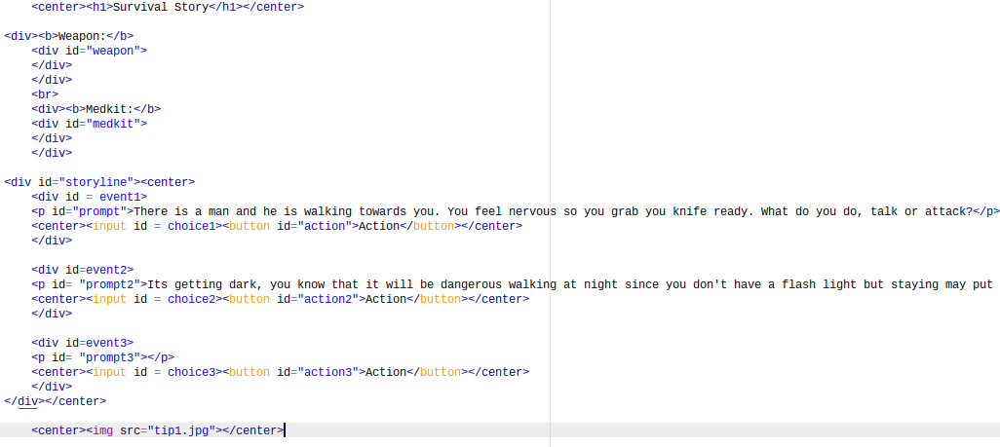
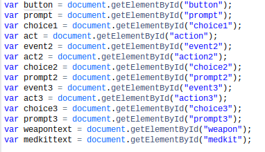
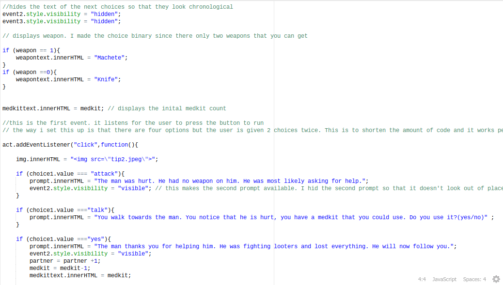
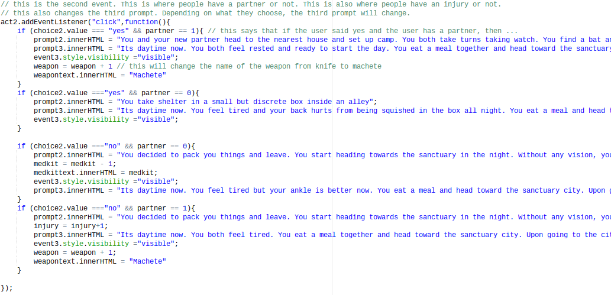
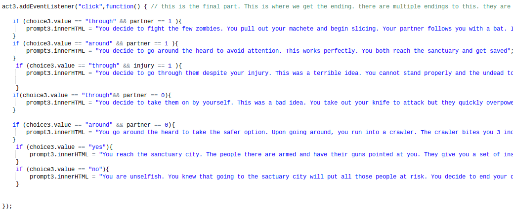

For my interactive website, I created a sort of story game where you have to type in decision and those decisions will change the outcome of the story. I made three major events. Named event1, event2, and event3. Each of these events had its own prompt. The first two prompts are set in stone. I made them a more universal prompt but the third one changes depending on what the user has choosen, thats why the third prompt is empty.
Now time for the javascript. For my javascript. I first added the elements by id
After having all the elements now, i can now manipulate them based on events. To start off, I created variables. The variables I created are the things that will be changed throughout the story. They are all signigicant. After that, I added the portion of the code where it waits for the user to type in their answer. Furthermore, based on what the user choose, a different code will run basically changing the story. The .innerHtml was useful because it changed the html of a certain div or section of the code depending on what the user did. This is what I built my game on. To react based on what the user does.
  